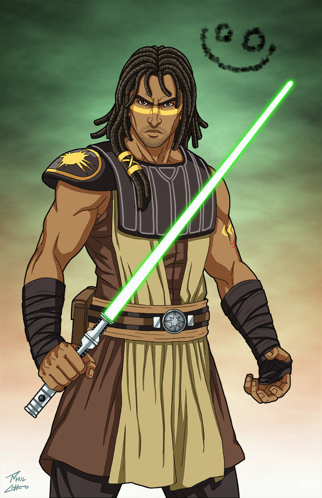

Hyperblog
Tu blog de cabecera
Este es el título atractivo e interesante del post
y este es el párrafo de inicio donde vamos a explicar las cosas Increíbles que se pueden hacer con ramas


Los blogs son la mejor forma de compartir informacion y tus ideas. Mucho mas que ir a conferencias salir en youtube. Exceptio si eres un rockstar. Pero estadísticamente no lo eres ... por ahora."
Suscribete y dale like